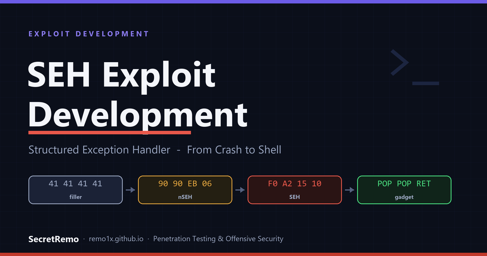
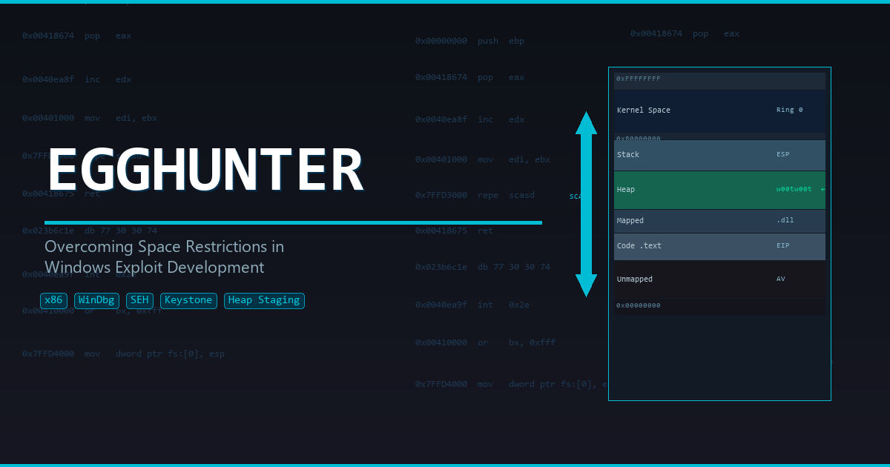
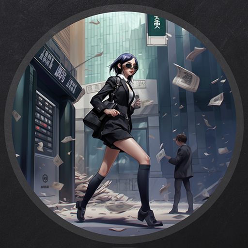

Offensive security, written where the light turns. Active Directory, Windows internals, and exploit development, one writeup at a time, as the day burns down.
Machines, chains, and challenges, from foothold to flag.

Exploit DevStructured Exception Handler overwrites in Sync Breeze, walked to a stable shell in WinDbg.

Exploit DevWhen the buffer is too small, hunt the egg, staging a second payload on Windows.

WindowsSilver tickets, MSSQL abuse, and NTLM relaying across a hardened AD estate.
A Squid proxy pinhole, a PaperCut CVE, and a SUID bash to root.
Each category, a torii lit by the last of the light.